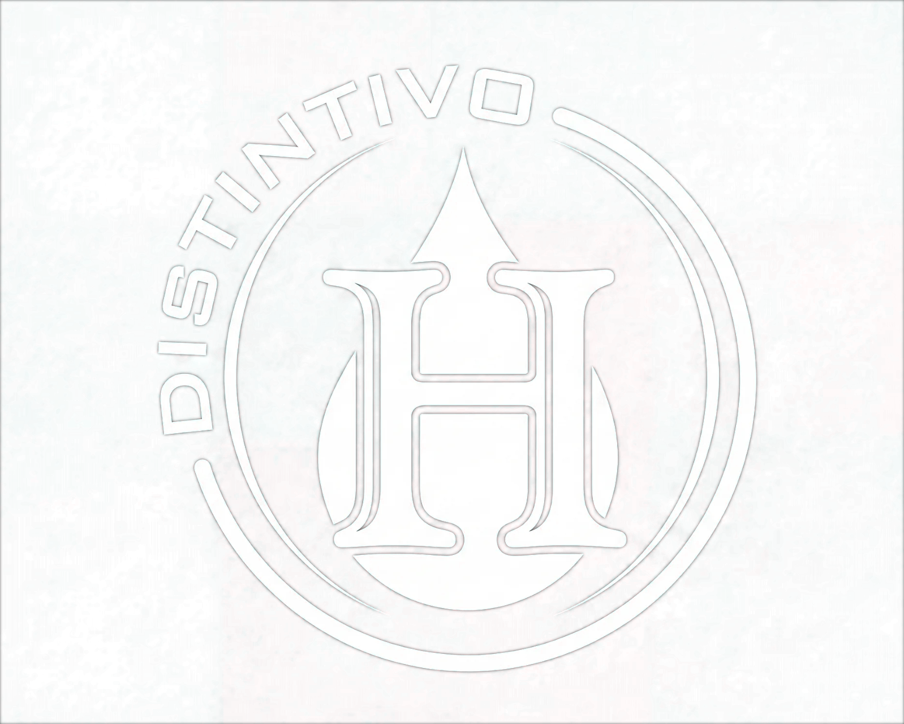
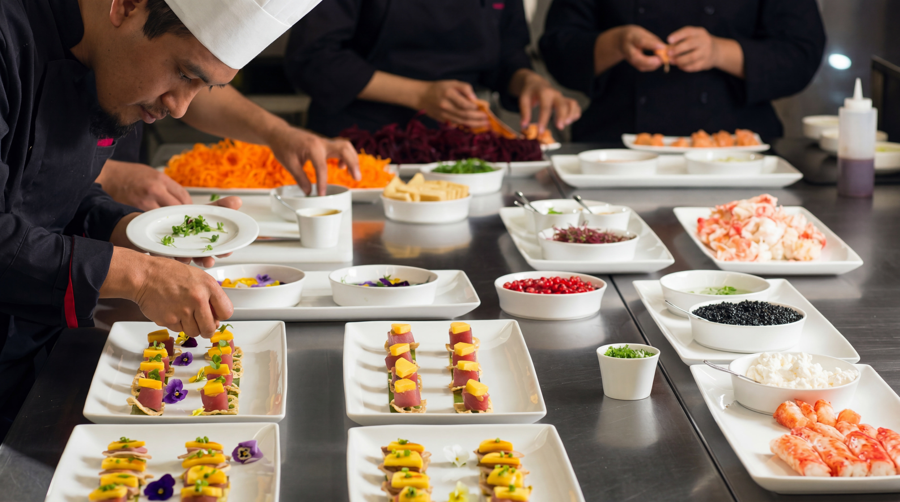

Distintivo H
Reconocimiento nacional a las prácticas de higiene y manejo de alimentos, otorgado por la Secretaría de Turismo.


Diseño a la medida de celebraciones únicas y memorables. Somos una empresa de servicios fundada en la experiencia, la responsabilidad y, sobre todo, la atención al cliente porque cada celebración merece ser tratada como una pieza única.
Continuar LeyendoCada velada se diseña para quienes la ofrecen. Nada se deja al azar, nada se repite.





Cuatro certificaciones reconocen la forma en que trabajamos.

Reconocimiento nacional a las prácticas de higiene y manejo de alimentos, otorgado por la Secretaría de Turismo.

Servicio kosher certificado internacionalmente, elaborado bajo supervisión rabínica.

Miembros del Consejo Mexicano de Profesionales en Eventos.

Distinguidos con el Modelo de Excelencia Turística mextCDMX por la calidad del servicio.